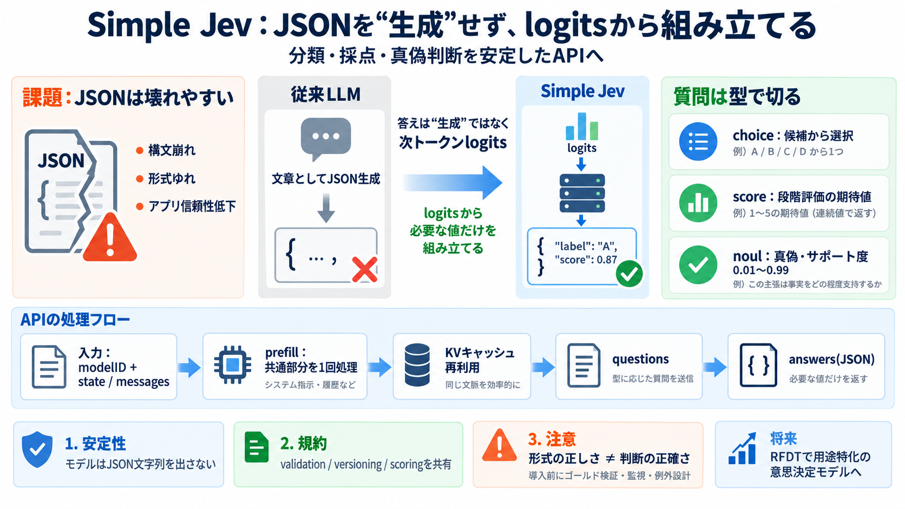

Jev: TypeSafe's System One Model That Never Hallucinates
TypeSafe is candid that it can't prove the pricing isn't subsidized, and says the long term will have to demonstrate sus…

分類を「生成」ではなく
オープン言語モデルの「次トークンlogits」を読み取り、サーバがJSONを組み立てることで分類・採点・真偽判断をAPI化します。
JSONは壊れやすい
LLMにJSONを「文章として生成」させると、構文崩れや形式ゆれが起きやすく、アプリ側の信頼性が下がります。
答えは“生成”じゃなく
Simple Jevは、許容ラベルに対応する次トークンの分布（logits）だけを見て、サーバが構造化出力を作ります。
APIは1回で前処理
共通コンテキスト（state/messages）をprefillで処理し、複数questionsに対してKVキャッシュを使い回して効率化を狙います。
質問は型で切る
各questionsはtypeごとに定義され、対応する次トークンの値からサーバが answers をJSONで返します。
“安定”の狙い
モデルがJSON文字列を生成しないため、構文崩れや形式ゆれの主因を設計から排除します。
規約で整合性
PROMPT_STRUCTURE_V1.md と共通（common/）の入力→プロンプト→評価規約を揃え、実装間の差を減らします。
将来は学習へ
RFDT（Really Fancy Decision Training）により、用途特化の意思決定能力を学習・蒸留で改善する道も示されています。
形式が正しくても
レスポンス形式の正しさと、判断の正確さは別物です。モデル能力・ラベル設計・トークナイズ整合性の評価が必要です。
まとめ
Simple Jevは、logitsを根拠にサーバがJSONを構築し、prefill/KV再利用で効率も狙う「分類器相当API」です。
TypeSafe is candid that it can't prove the pricing isn't subsidized, and says the long term will have to demonstrate sus…
| | | | --- | Plan | Price (/unit/month) | Features | | Featherless Developer | $50+ | Credit-based API access wit…
| Base44 | ✅ Limited | $25/mo | Credit-based subscriptions | [...] | Gemini 2.5 Flash-Lite | $0.10 | $0.40 | Cheapest op…
Compare Us Featherless Alternativesvs. Together AIvs. Replicatevs. Fireworks AI Company About UsPrivacy PolicyTerms o…
### Description 4,421 views Posted: 2026-09-16